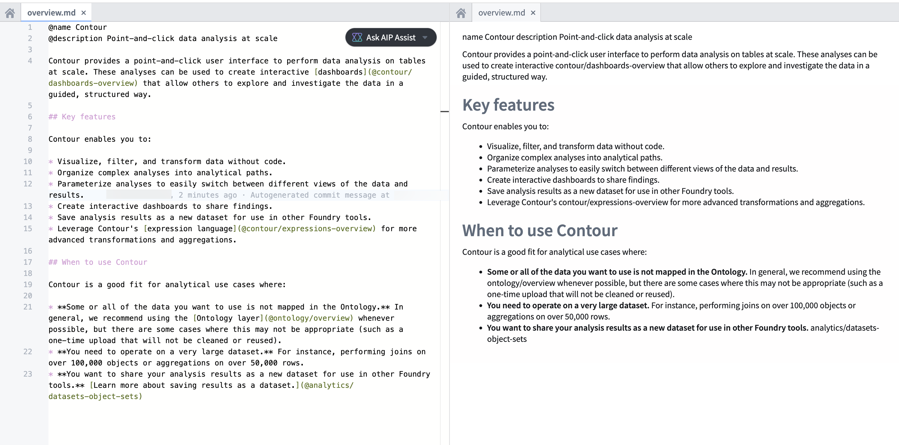
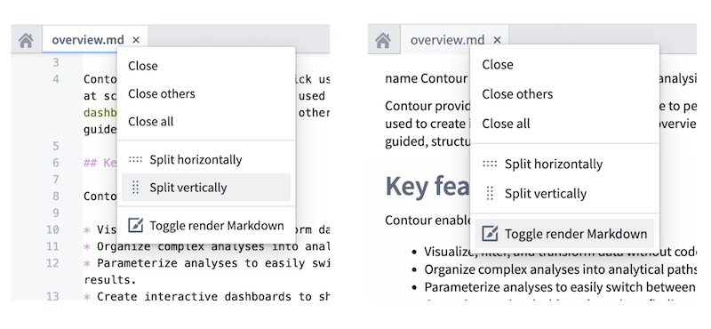

To help you write and edit custom documentation, you can preview Markdown files in your documentation repository using Code Repositories. Markdown previews are rendered side-by-side with the source Markdown code in the code editor, as shown in the screenshot below.

To view a rendered preview of your Markdown files in Code Repositories, you can turn on Markdown preview by following these steps.

Note that not all features of Palantir custom documentation will be fully rendered in a Markdown preview using Code Repositories, as the Markdown preview uses "vanilla" Markdown without Palantir-specific additions. The Markdown preview is intended to facilitate the custom documentation process but does not display a 1:1 copy of the final published documentation; Palantir-specific formatting will be applied later in the publishing process.
In particular the following will not render in their display format until published:
@ tag, such as @title or @description - will appear as plain text in Markdown preview but will be applied later in the publishing process.ordering.md file, may not be available in Markdown preview.